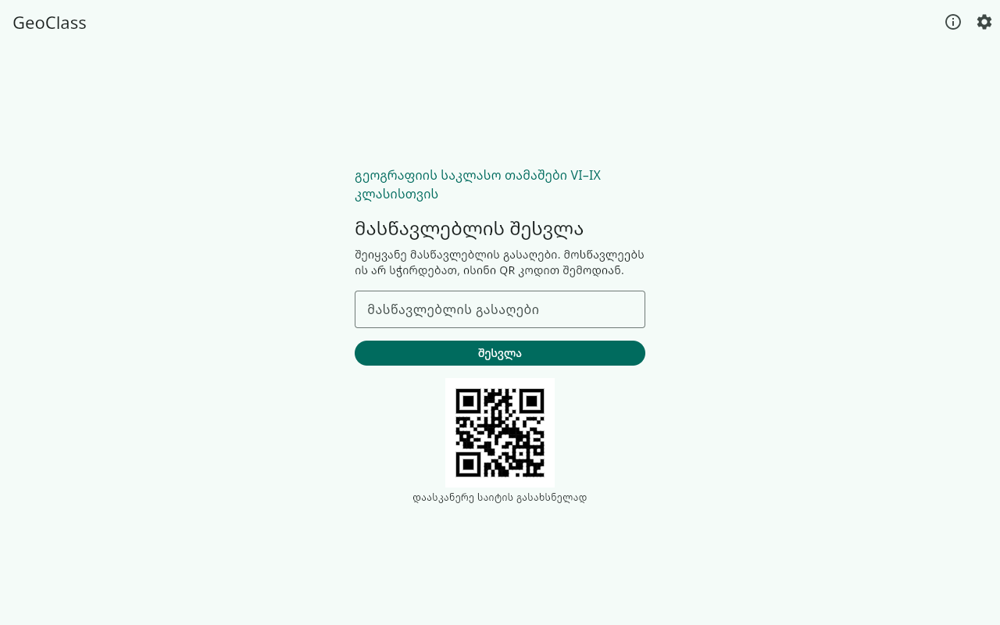
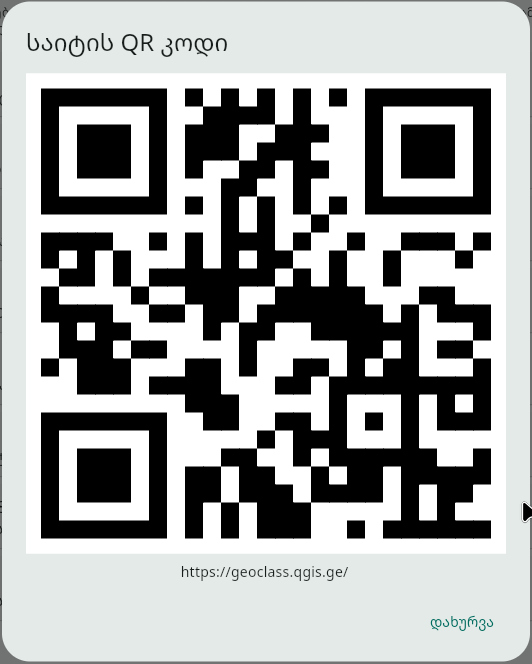
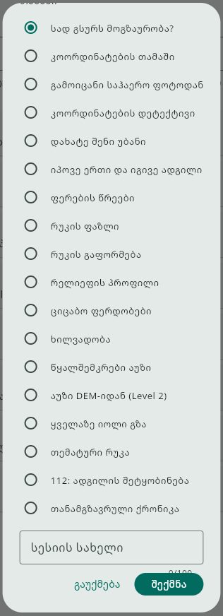
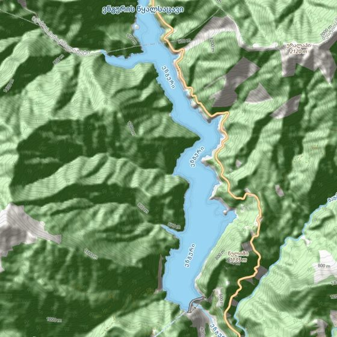
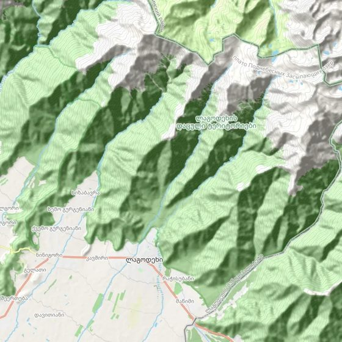
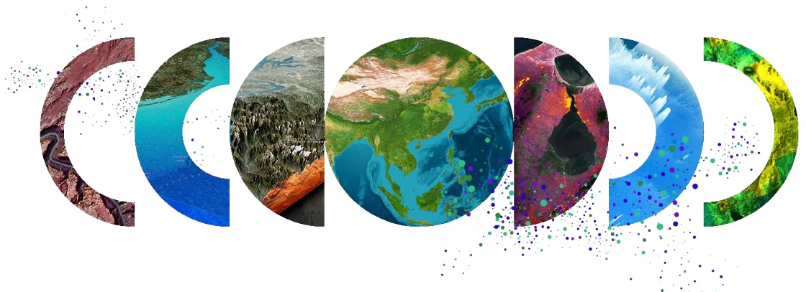
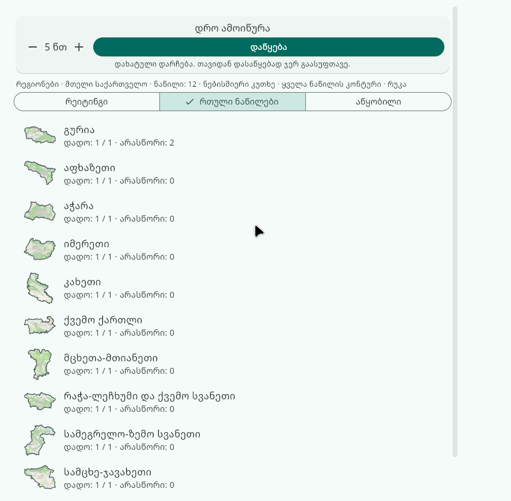
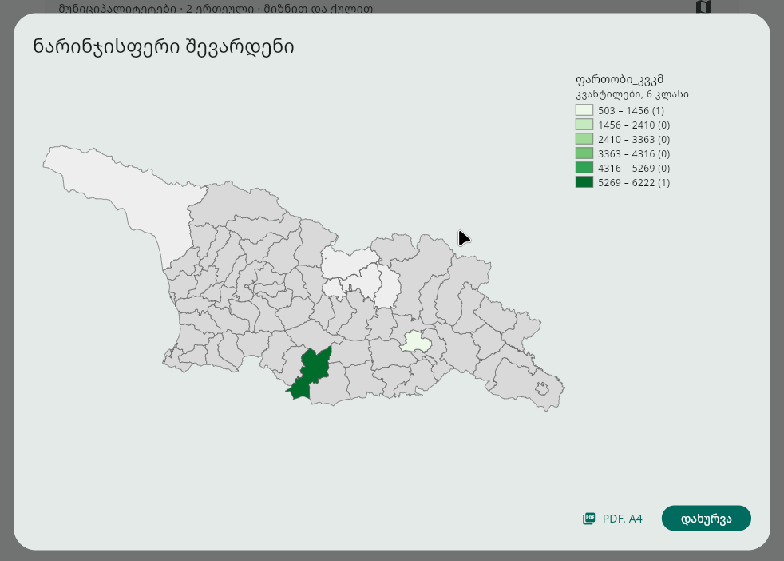

GeoClass: მასწავლებელი აჩვენებს QR კოდს, მოსწავლეები ტელეფონიდან ანონიმურად პასუხობენ, პასუხები ცოცხლად ჩნდება რუკაზე. ცოცხალი ვერსია: geoclass.qgis.ge. ფაქტები გადამოწმებულია რეპოზიტორიაში 2026-11-21-ზე. [აქ დაამატე შენი სიტყვები]GeoClass: the teacher shows a QR code, students answer anonymously on their phones, answers appear live on a map. Live version: geoclass.qgis.ge. Facts checked in the repository on 2026-11-21. [Add your own words here]
იდეაThe idea
როგორ მუშაობს გაკვეთილიHow a lesson works
1 · სესიაSession
მასწავლებელი ქმნის სესიას და ირჩევს თამაშსThe teacher creates a session and picks a game
2 · QR კოდიQR code
კლასს აჩვენებს QR კოდსShows the QR code to the class
3 · ტელეფონებიPhones
მოსწავლეები შემოდიან ანგარიშის გარეშე და პასუხობენStudents join without an account and answer
4 · ცოცხალი რუკაLive map
პასუხები მასწავლებლის რუკაზე ჩნდება მაშინვეAnswers appear on the teacher’s map at once
VI–IX კლასებისთვის; ქართული და English; Web (PWA), Android, Windows და Linux ერთი კოდიდან.For grades VI–IX; Georgian and English; Web (PWA), Android, Windows and Linux from one codebase.
წყარო: README, „Features“. გაკვეთილის ნაკადი: სესია → QR → ტელეფონები → ცოცხალი რუკა.Source: README, “Features”. Lesson flow: session → QR → phones → live map.
ცოცხალი სისტემაLive system
geoclass.qgis.ge: შესვლა და საიტის QRgeoclass.qgis.ge: sign-in and the site QR

მასწავლებლის შესვლაTeacher sign-in

საიტის QR კოდი (მასწავლებლის ეკრანი)The site QR code (teacher screen)
მარცხენა სურათი — geoclass.qgis.ge-ს საწყისი გვერდი; მარჯვენა — მასწავლებლის ეკრანის „საიტის QR კოდი“ (ნამდვილი ეკრანის სურათი). v1.0.0 (2026-11-11), Zenodo DOI; კოდი ღიაა (MIT): github.com/GIS-GEORGIA/geoclass.Left: the geoclass.qgis.ge start page; right: the “site QR code” on the teacher screen (a real screenshot). v1.0.0 (2026-11-11), Zenodo DOI; open source (MIT): github.com/GIS-GEORGIA/geoclass.
თამაშებიGames
პირველი 9 თამაში: რას ვარჯიშობენ მოსწავლეებიThe first nine games: what students practise
თამაშიGame
რას ვარჯიშობენWhat it practises
სად გსურს მოგზაურობა?
წერტილი რუკაზე და მიზეზი — ონლაინ რუკის გამოყენებაA point on the map and a reason — using an online map
კოორდინატების თამაში
DD, DM, DMS და UTM; განედი და გრძედიDD, DM, DMS and UTM; latitude and longitude
გამოიცანი საჰაერო ფოტოდან
ლანდშაფტის კითხვა; ფოტოს დაკავშირება რუკასთანReading the landscape; matching a photo to a map
დახატე შენი უბანი
წერტილების, ხაზებისა და პოლიგონების ხატვა დროის წინააღმდეგDrawing points, lines and polygons against the clock
იპოვე ერთი და იგივე ადგილი
ვიზუალური მეხსიერება; ადგილების ამოცნობაVisual memory; recognising places
კოორდინატების დეტექტივი
კოორდინატების გადაყვანა ფორმატებს შორის, ადგილის პოვნა და დასახელებაConverting coordinates, finding and naming the place
ფერების წრეები
ფერადი წერტილებში დამალული ფორმის ამოცნობაRecognising a shape hidden in coloured dots
რუკის ფაზლი
რეგიონებისა და მუნიციპალიტეტების ფორმები და მდებარეობაThe shapes and positions of regions and municipalities
რუკის გაფორმება
რუკის ელემენტები: ისარი, ლეგენდა, მასშტაბი, ბადეThe parts of a map: arrow, legend, scale, grid
ცხრილი README-ის „Games“ ცხრილიდანაა (ქართული აღწერები ჩემია); ქართული სახელები აპლიკაციის „ახალი სესიის“ სიიდანაა. README-ში 9 თამაშია, აპლიკაციაში — 18.The table follows the README “Games” table (Georgian descriptions are mine); the Georgian names come from the app’s “new session” list. The README lists nine games, the app has 18.
თამაშებიGames
18 თამაში ერთ სიაშიEighteen games in one list

მასწავლებელი სესიის შექმნისას ირჩევს თამაშს და აძლევს სესიას სახელს
პირველი 9 — რუკა, კოორდინატები, ბარათები, პაზლი, მაკეტი…
ახალი: რელიეფის პროფილი, ციცაბო ფერდობები, ხილვადობა, წყალშემკრები აუზი, ყველაზე იოლი გზა, თემატური რუკა, 112, თანამგზავრული ქრონიკა
When creating a session the teacher picks a game and names the session
The first nine — maps, coordinates, cards, puzzle, layout…
სურათი — „ახალი სესიის“ დიალოგი (ნამდვილი ეკრანის სურათი): 18 თამაში. README ჯერ 9-ს აღწერს.The image is the “new session” dialog (a real screenshot): 18 games. The README still describes nine.
კოორდინატებიCoordinates
კოორდინატები: ორი თამაშიCoordinates: two games
ფორმატები: DD, DM, DMS და UTM (WGS84; 37N/38N); რუკაზე შესაბამისი ბადე
კოორდინატთა დეტექტივი: სასწავლო სურათზე წაიკითხე კოორდინატები, გადაიყვანე სხვა ფორმატში, იპოვე და დაასახელე ადგილი
კონვერტერი მოსწავლეებისთვის; მასწავლებელს შეუძლია გამორთოს
Formats: DD, DM, DMS and UTM (WGS84; 37N/38N); a matching grid on the map
Score: 100 within 1 km, 50 at 10 km, 0 from 100 km; logarithmic scale
Coordinate detective: read coordinates from a training picture, convert them, find and name the place
A converter for students; the teacher can turn it off
წყარო: README, სექციები „The coordinates game“ და „The coordinate detective“.Source: README, sections “The coordinates game” and “The coordinate detective”.
თამაშიGame
ბარათები: იპოვე ერთი და იგივე ადგილიCards: find the same place

ენგური · დიდი მასშტაბიEnguri · larger scaleენგური · პატარა მასშტაბიEnguri · smaller scale

ლაგოდეხი · დიდი მასშტაბიLagodekhi · larger scaleლაგოდეხი · პატარა მასშტაბიLagodekhi · smaller scale
თითო ადგილი — ორი ბარათი სხვადასხვა მასშტაბზე; მასწავლებელი ირჩევს წყვილებს, ბრუნვას და ჩრდილოეთის ისარს. რეიტინგი: წყვილები, მერე ნაკლები შეცდომა, მერე სიჩქარე. Android-ის კომპასი ბარათს რეალური ჩრდილოეთისკენ აბრუნებს (README).Each place has two cards at different scales; the teacher picks the pairs, rotation and a north arrow. Ranking: pairs, then fewer wrong tries, then speed. The Android compass turns a card toward real north (README).
რუკა ხელითMaps by hand
პაზლი, ფირფიტები და რუკის მაკეტიPuzzle, plates and map layout

რუკის პაზლი: საქართველოს აწყობა 12 რეგიონიდან, მუნიციპალიტეტებიდან ან ჯიგსოდან; საზღვრები OpenStreetMap-იდან
რუკის მაკეტი: შეღებე ერთეულები ლეგენდით, დაამატე სათაური, ისარი, მასშტაბი და ბადე; A4 PDF
ფერადი ფირფიტები: დამალული რეგიონი ან ქვეყანა; კლასი პასუხობს ხმამაღლა, არ არის სამედიცინო ტესტი
Map puzzle: put Georgia together from 12 regions, municipalities or a jigsaw; outlines from OpenStreetMap
Map layout: colour the units by a legend, add a title, arrow, scale and grid; an A4 PDF
Colour plates: a hidden region or country; the class answers aloud; it is not a medical test
წყარო: README, სექციები „Map puzzle“, „Map layout“, „Colour plates“. რუკის მაკეტის მასშტაბი ითვლება Web Mercator-ის მასშტაბიდან შუა განედზე.Source: README, sections “Map puzzle”, “Map layout”, “Colour plates”. The layout scale is computed from the Web Mercator scale at the middle latitude.
რუკის ფაზლიMap puzzle
რუკის ფაზლი: მასწავლებლის ეკრანიMap puzzle: the teacher screen

მასწავლებელი ადგენს დროს (მაგ. 5 წუთი) და იწყებს თამაშს
რეგიონები: მთელი საქართველო, 12 ნაწილი, ნებისმიერი კუთხე, ყველა ნაწილის კონტური
სამი ჩანართი: რეიტინგი, რთული ნაწილები, აწყობილი — ჩანს, რომელი ნაწილი რამდენჯერ დაიდო და რამდენჯერ არასწორად
The teacher sets the time (e.g. 5 minutes) and starts the game
Regions: all of Georgia, 12 pieces, any angle, the outline of every piece
Three tabs: ranking, hard pieces, assembled — you see how often each piece was placed and how often wrongly
სურათი — მასწავლებლის ეკრანი (ნამდვილი ეკრანის სურათი). წყარო: README „Map puzzle“.The image is the teacher screen (a real screenshot). Source: README “Map puzzle”.
თემატური რუკაThematic map
თემატური რუკა: მუნიციპალიტეტები და კლასებიThematic map: municipalities and classes

რუკა და ლეგენდა: ველი „ფართობი_კვკმ“, კვანტილები, 6 კლასი; ლეგენდაში ჩანს ერთეულების რაოდენობა
კლასიფიკაციის მეთოდები: თანაბარი ინტერვალი, კვანტილი, Jenks, ხელით
A4 PDF ღილაკი რუკის დასაბეჭდად
Map and legend: the “area_km2” field, quantiles, 6 classes; the legend shows the number of units
სურათი — თემატური რუკის შედეგის ფანჯარა (ნამდვილი ეკრანის სურათი). მეთოდები: commit „Add thematic map game (choropleth classification)“. ნიმუშში მხოლოდ 2 ერთეულია მონიშნული.The image is the thematic map result window (a real screenshot). Methods: commit “Add thematic map game (choropleth classification)”. Only two units are marked in the sample.
GIS ლაბორატორიაGIS lab
რელიეფის თამაშები: სამი რეგიონიTerrain games: three areas
რელიეფის პროფილი, ციცაბო ფერდობები, ხილვადობა
წყალშემკრები აუზი, აუზი DEM-იდან (Level 2), ყველაზე იოლი გზა
თემატური რუკა, 112: ადგილის შეტყობინება, თანამგზავრული ქრონიკა
თანაბარი ინტერვალი და კვანტილი — QGIS; Jenks — ზუსტი ოპტიმუმიEqual interval and quantile — QGIS; Jenks — exact optimum
ფართობები და IoU
PROJ geod; GDAL/OGRPROJ geod; GDAL/OGR
წყარო: commit-ების ტექსტები (Phase 2 Task 3–9, thematic map game, time-lapse game). ტესტები ამოწმებს მოდელებს რეფერენსულ პროგრამებთან; ეს არ ნიშნავს, რომ ყველა გაკვეთილის შედეგი „ოფიციალურად დადასტურებულია“.Source: commit texts (Phase 2 Task 3–9, thematic map game, time-lapse game). Tests compare the models with reference programs; this does not mean every lesson result is “officially certified”.
კონფიდენციალობაPrivacy
მოსწავლისგან არაფერს ვითხოვთWe ask students for nothing
ანგარიში, სახელი, ელფოსტა ან ტელეფონი არ სჭირდება — მხოლოდ შემთხვევითი კოდი მოწყობილობაზე
სესიები ავტომატურად იშლება 6 თვის შემდეგ; მოსწავლეს შეუძლია საკუთარი პასუხების წაშლა
აპლიკაცია cookies-ს არ ადგენს
მოსწავლეები ერთმანეთის პასუხებს ვერ კითხულობენ
No account, name, email or phone — only a random code made on the device
Sessions are deleted automatically after 6 months; a student can delete their own answers
The app sets no cookies
Students cannot read each other’s answers
წყარო: README, „Privacy and GDPR“, „How it fits together“. კონფიდენციალობის პოლიტიკა — web/privacy/index.html.Source: README, “Privacy and GDPR”, “How it fits together”. The privacy policy is web/privacy/index.html.
არქიტექტურაArchitecture
როგორ არის აგებულიHow it is built
1 · FlutterFlutter
ერთი აპი Web-ისთვის, Android-ისთვის, Windows-ისა და Linux-ისთვისOne app for Web, Android, Windows and Linux
2 · WorkerWorker
Cloudflare Worker — API და ვებ-ვერსია ერთ მისამართზეA Cloudflare Worker — API and web build on one address
3 · D1D1
SQLite ბაზა სესიებისა და პასუხებისთვისA SQLite database for sessions and answers
4 · R2R2
რელიეფის მონაცემები (DEM) თამაშებისთვისTerrain data (DEM) for the games
ცოცხალი შედეგები: სერვერის გამოკითხვა ყოველ 3 წამში (WebSocket-ის გარეშე).Live results: the server is polled every 3 seconds (no WebSockets).
წყარო: README, „How it fits together“ (Flutter → Worker → D1; polling every 3 seconds) და commit „Serve the terrain areas from R2“.Source: README, “How it fits together” (Flutter → Worker → D1; polling every 3 seconds) and the commit “Serve the terrain areas from R2”.
AIAI
როგორ დამეხმარა AI GeoClass-შიHow AI helped with GeoClass
49 / 49
commit-ი Claude-ის co-author ჩანაწერითcommits with a Claude co-author trailer
14
დღე: 2026-11-02 → 11-15days: 2026-11-02 → 11-15
18
თამაში აპლიკაციაშიgames in the app
232
test() გამოძახება (Flutter და Worker)test() calls (Flutter and Worker)
ციფრები git ისტორიიდან და ტესტების საქაღალდეებიდანააNumbers come from git history and the test folders
49 commit, ყველა შეიცავს „Co-Authored-By: Claude“ ხაზს. 232 = „test(“ გამოძახებები test/ და worker/test/ საქაღალდეებში (მიახლოებითი დათვლა). [აქ დაამატე შენი სიტყვები]49 commits, all containing a “Co-Authored-By: Claude” line. 232 = “test(” calls in test/ and worker/test/ (an approximate count). [Add your own words here]
ამბავი 1Story 1
ოთხი ეტაპი ერთ დღეშიFour stages in one day
GeoClassGeoClass
პრობლემაProblem
კლასში გამოსაყენებელი მარტივი საიტი, რომელიც რუკაზე ცოცხლად აჩვენებს მოსწავლეების პასუხებსA simple site for the classroom that shows student answers live on a map
როგორ დამეხმარა AIHow AI helped
პირველ დღეს ავაწყვეთ სესიები და QR, მოგზაურობის თამაში, კოორდინატები, საჰაერო ფოტო და Android-ის buildOn day one we built sessions and QR, the travel game, coordinates, aerial photo and an Android build
შედეგიResult
2026-11-02: 9 commit; საიტი გამოქვეყნდა geoclass.qgis.ge-ზე2026-11-02: nine commits; the site went live at geoclass.qgis.ge
გაკვეთილი: დიდი სპეციფიკაცია შევამცირეთ: სესია, ერთი მასწავლებელი, ოთხი ეტაპიLesson: We cut a big specification down: a session, one teacher, four stages
git: 2026-11-02
ეს შეფასება დაფუძნებულია commit-ებზე; „სპეციფიკაცია შევამცირეთ“ ჩემი დაკვირვებაა პროექტის ისტორიიდან — გადაამოწმე.
commits: 2026-11-02: Add GeoClass stage 1: sessions, QR and the travel game · Deploy to geoclass.qgis.ge · Add stage 2: coordinates game · Add stage 3: aerial photo game · Add stage 4: Android release setup
[აქ დაამატე შენი სიტყვები]This rests on the commits; “we cut the specification” is my reading of the project history — please check it.
commits: 2026-11-02: Add GeoClass stage 1: sessions, QR and the travel game · Deploy to geoclass.qgis.ge · Add stage 2: coordinates game · Add stage 3: aerial photo game · Add stage 4: Android release setup
[Add your own words here]
ამბავი 2Story 2
ანალიზი, რომელსაც შეიძლება ენდოAnalysis you can trust
GIS ლაბორატორიაGIS lab
პრობლემაProblem
რელიეფის თამაშები უნდა ითვლიდეს ისე, როგორც პროფესიული GISThe terrain games must calculate like professional GIS
როგორ დამეხმარა AIHow AI helped
ყოველი ფუნქცია შევადარეთ რეფერენსულ პროგრამას: gdaldem, gdal_viewshed, GRASS, QGIS, PROJWe compared every function with a reference program: gdaldem, gdal_viewshed, GRASS, QGIS, PROJ
შედეგიResult
viewshed და hillshade — უჯრედ-უჯრედ დამთხვევა; Jenks — ზუსტი ოპტიმუმიviewshed and hillshade match cell for cell; Jenks is the exact optimum
გაკვეთილი: რეფერენსულ პროგრამასთან შედარება AI-ით დაწერილ ლოგიკას სანდოს ხდისLesson: Comparing with a reference program makes AI-written logic trustworthy
git: 2026-11-13 → 14
commit-ების ტექსტებში წერია, რომ რეფერენსულ პროგრამებთან შემოწმება ტესტებშია.
commits: 2026-11-13: Phase 2 Task 7: Viewshed game · Phase 2 Task 6: Slope game · 2026-11-14: Add thematic map game (choropleth classification) · Phase 2 task 9: least-cost path game
[აქ დაამატე შენი სიტყვები]The commit texts state that the comparison with reference programs is in the tests.
commits: 2026-11-13: Phase 2 Task 7: Viewshed game · Phase 2 Task 6: Slope game · 2026-11-14: Add thematic map game (choropleth classification) · Phase 2 task 9: least-cost path game
[Add your own words here]
ამბავი 3Story 3
უსაფრთხოება გაკვეთილისთვისSafety for a classroom
უსაფრთხოება და კონფიდენციალობაSecurity and privacy
პრობლემაProblem
კლასის სისტემა საჯარო ინტერნეტშია; მასწავლებლის გასაღები და მოსწავლეების მონაცემები დაცული უნდა იყოსThe system is on the public internet; the teacher key and student data must be protected
როგორ დამეხმარა AIHow AI helped
ჩავრთეთ გაუქმებადი სესიები, წაშლა 6 თვეში, ცდების შეზღუდვა, Content-Security-Policy და ტესტური (staging) სერვერიWe added deletable sessions, deletion after 6 months, a limit on failed tries, a Content-Security-Policy and a staging server
შედეგიResult
გასაღების ნაწილობრივი მინიშნება მოვხსენით; მასწავლებლებს ახლა თავიანთი გასაღებები აქვთWe removed the partial key hint; teachers now get their own keys
გაკვეთილი: საფრთხის სახეები ადრევე უნდა გავითვალისწინოთ — ტესტური სერვერი რისკიან ცვლილებებს იცავსLesson: Think about threats early — a staging server protects risky changes
git: 2026-11-11 → 12
წყარო: commit-ების სათაურები.
commits: 2026-11-11: GDPR: delete sessions after 6 months, let students erase their answers · 2026-11-12: Remove the public key hint and rate-limit failed teacher sign-ins · Add teacher accounts: the owner gives others their own keys · Add a Content-Security-Policy and security headers, and a staging Worker
[აქ დაამატე შენი სიტყვები]Source: commit subjects.
commits: 2026-11-11: GDPR: delete sessions after 6 months, let students erase their answers · 2026-11-12: Remove the public key hint and rate-limit failed teacher sign-ins · Add teacher accounts: the owner gives others their own keys · Add a Content-Security-Policy and security headers, and a staging Worker
[Add your own words here]
Android: build მზადაა, Google Play-ზე ჯერ არ არის გამოქვეყნებული
GIS ლაბორატორიის თამაშებს ჯერ არ აქვს README-ის აღწერა
Web: live — geoclass.qgis.ge
v1.0.0 released (2026-11-11), with a DOI for citation
Android: a build exists, not yet published on Google Play
The GIS lab games are not described in the README yet
წყარო: README (Status, Stage 4 „Built, not published“) და რეპოს ბოლო commit-ები. [აქ დაამატე შენი სიტყვები]Source: README (Status, Stage 4 “Built, not published”) and the latest commits. [Add your own words here]